Installing and running Active Perl runtime as ISAPI on Microsoft IIS 7.0
Translations:
Summary
To provide Active Perl runtime support on Microsoft Internet Information Services 7.0 (x86 and x64), you install Active Perl through an MSI distributive on a server, update Internet Information Services 7.0 service provider settings in WebsitePanel and setup a new hosting plan or update an existing one making Active Perl runtime is available to the customers.
Install Active Perl
To install Active Perl runtime, please visit the following link http://www.activestate.com/activeperl/downloads/ and download the most recent version from the list. Despite of the platform bitness either x86 or x64 you are going to install Active Perl on, only x86 distributive of Active Perl must be used on both platforms.
1. Run installation by opening the distributive downloaded
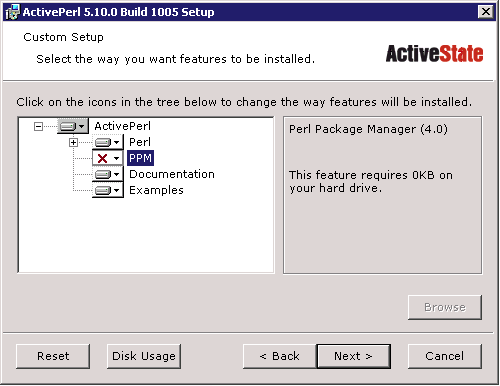
Hint: you can enable PPM component in order to streamline Perl modules and libraries update process as the component does that job.
2. Uncheck all of the options prompted (as WebsitePanel handles scripting extensions mapping on its own) and click Next button
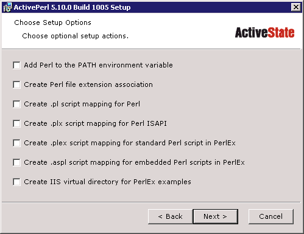
3. As soon as the installation process has been finished Perl runtime should be tested if it works as expected. First of all web server role services should be verified whether CGI role service is installed (see the screenshot accompanying)
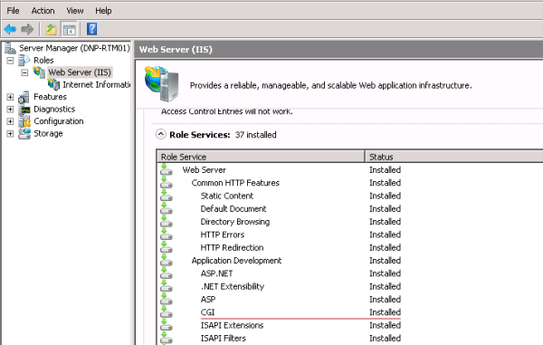
4. Then create a demo web site to test Active Perl runtime work (localhost > Sites > Add Web Site)
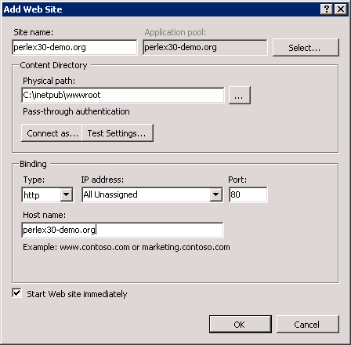
5. Register an allowance rule for PerlEx30.dll file in IIS (localhost > IIS > ISAPI and CGI Restrictions) to allow Active Perl scripting runtime being used for a web site when .pl or .cgi page is requested
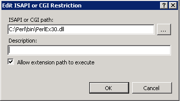
6. Register .pl file extension mapping for perlex30-demo.org web site (localhost > Sites > perlex30-demo.org > IIS > Handler Mappings)
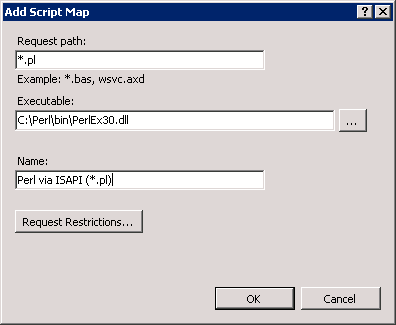
7. Register .cgi file extension mapping for perlex30-demo.org web site (localhost > Sites > perlex30-demo.org > IIS > Handler Mappings)
8. Open Notepad.exe, paste the content that follows and save the file as perltest.pl in perlex30-demo.org's root folder
$url = "http://$env%7bserver_name%7d$env%7burl%7d/";
$ip = "$ENV{REMOTE_ADDR}"; print <<ENDOFTEXT;
HTTP/1.0 200 OK
Content-Type: text/html
<HTML>
<HEAD><TITLE>Hello World!</TITLE></HEAD>
<BODY>
<H4>Hello World!</H4>
<P>You have reached <a href="$url">$url</a></P>
<p>Your IP address is $ip</P>
<H5>Have a nice day!</H5>
</BODY>
</HTML>
ENDOFTEXT
exit(0);
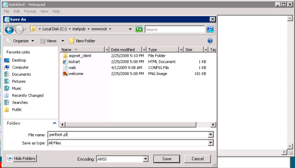
9. Open a web browser, type the web site's url and if everything is configured correct the following page should appear
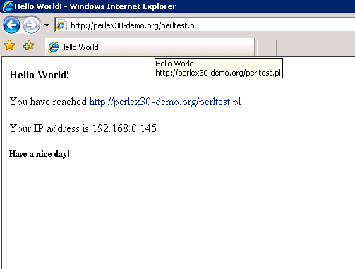
Update WebsitePanel settings
To update Internet Information Services 7.0 service provider settings open your control panel portal in the browser and login as serveradmin. As soon as you've logged in navigate to Configuration > Servers > Web Server > IIS 7.0 provider settings.
1. By default Perl executable path setting (Web Extensions section) assumes that you use default Perl installation path, however if you changed default Perl installation path update this setting correspondingly
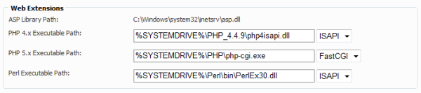
2. Once the service provider settings have been updated, update an existing hosting plan quotas or create a new plan with Perl feature enabled
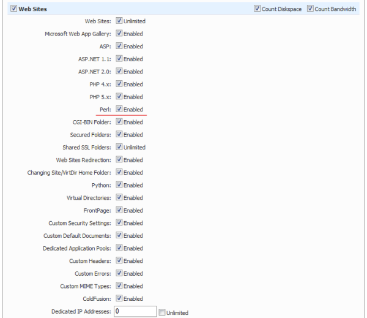
3. Now your customers can utilize Active Perl runtime capabilities right from the control panel's interface by enabling or disabling Perl scripting for a web site
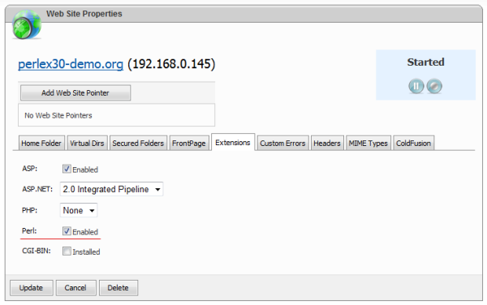